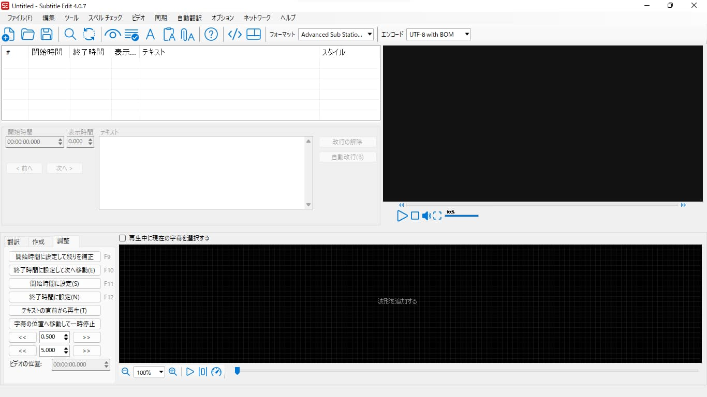
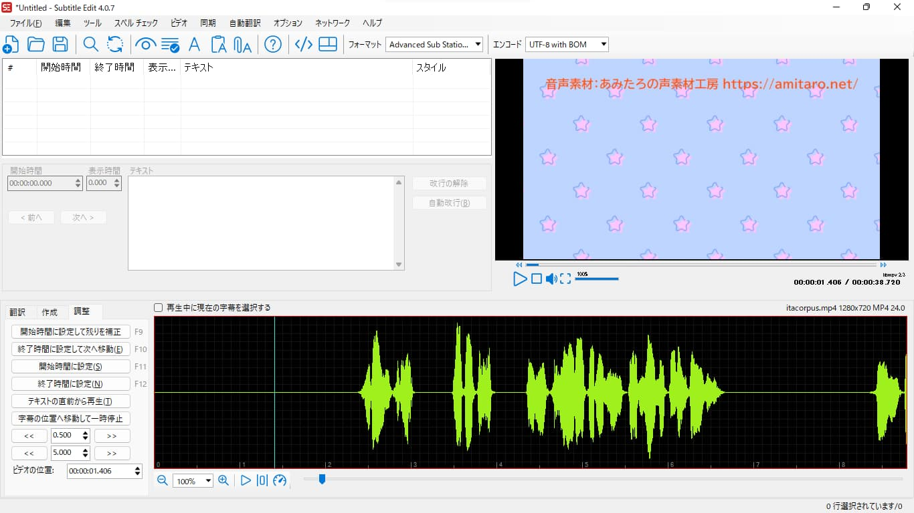

Appendix A — Subtitle Editで字幕をつける
A.1 Subtitle Editで文字入れする理由
A.1.1 さまざまな「字幕」とその役割
日本語で「字幕」や「テロップ」などと呼ばれるものは、それらの文字を動画に入れる目的に注目することで、いくつかの種類に分けることができます。
たとえば、「テロップ」といった場合、発話の一部にあわせて表示することで、その発話内容を強調するような役割をする文字を指すことがあります。一方で、「字幕（captions）」といった場合、発話内容のほかに、それらの話者や、そのシーンで鳴っている効果音なども含めて文字に起こすことで、音声から情報を得ることが困難な人でも動画の内容を把握できるよう助ける役割をする文字を指したりします。ほかにも、その音声を母語としない人向けに、発話内容の翻訳を提供するような「字幕（subtitles）」というのもあります。
A.1.2 Shotcutでの文字入れは不便
Shotcutだけでこういった文字入れをおこないたい場合、この資料で紹介した「テキスト：シンプル」や「テキスト：リッチテキスト」といったフィルタを利用することができます。また、Shotcutのフィルタとして文字入れせずに、個々の「テロップ」を画像などとして用意して、それらをクリップとして配置していけば、もっとさまざまな工夫を凝らしたデザインの文字を入れることができるでしょう。
しかし、いずれにせよ、Shotcutで発話にあわせた内容の文字入れをしようとすると、原則として、表示させる内容の数だけクリップを用意することにならざるをえません。表示させる内容が少なければそれでも構わないのですが、動画を通じて文字入れしなければならない箇所が増えてくると、こうした方法はいくつかの点で不便なものになりがちです。
まず、表示させる内容をそれぞれ異なるクリップとして扱おうとするのでは、はじめにそれらのクリップを用意するのにかなり時間がかかります。また、そうしたやり方では、それぞれの文字を適当なタイミングに割り付ける作業が大変ですし、後から内容やデザインを調整したいというときにも手間がかかってしまいます。
この下で紹介しているように、Shotcutのv24.08.29から、Subtitlesという「字幕」をまとめて扱える機能が追加され、まとまった量の文字入れもいくらか楽におこなえるようになりました。そちらの情報も確認してください。
A.1.3 字幕ファイルとSubtitle Edit
そこで、とりわけ、動画の要所でちょっとした「テロップ」を表示させたいというのではなく、発話内容のほとんどすべてを文字起こしした「字幕」をつけたいという場合では、そうした文字は字幕ファイルとして扱うと便利です。
字幕ファイルというのは、動画を再生したときに表示させたい「字幕」の内容を書くためのテキストファイルです。たとえば、次のテキストは、WebVTTという形式の字幕ファイルの一部です。
WEBVTT
00:00:02.020 --> 00:00:06.620 line:80%
フィレンツェ、パドヴァ、ヴェネツィアは
どれもイタリアの都市です
00:00:08.220 --> 00:00:11.890 line:80%
フェイントで相手をかわしてから
シュートでフィニッシュした
00:00:13.150 --> 00:00:17.470 line:80%
家具商人のフィシェルは
荷車と仔馬を貸してくれた
00:00:19.030 --> 00:00:23.350 line:80%
ハイチ共和国でトゥーサンルーヴェルテュールが
勝利を収められたのは
00:00:23.380 --> 00:00:25.900 line:80%
実際 黄熱病のおかげだった字幕ファイルにはWebVTTのほかにも、SRTやASSといったいくつかの形式がありますが、いずれも基本的には、この例のように、ある動画ファイルの「字幕」として表示させたいテキストと、それらのテキストを表示させるタイミングとがまとめて記述されているものになります。
こうした字幕ファイルは、YouTubeの自動字幕などのように、動画の再生時に動画プレイヤーで重ねて表示させたりするほか、編集ソフトなどによってあらためて動画に書き出すことで映像の一部として埋め込んだりします。後者の方法は、字幕を動画に「焼き込む」とか「焼き付ける」などといわれる作業で、動画を再生する動画プレイヤーによらず「字幕」を表示させられる点で便利ですが、動画ファイルをあらためて書き出すことになるため、書き出しに時間がかかる点に注意が必要です。
このページでは、Subtitle Editという字幕ファイル編集ソフトを取り上げ、動画に「字幕」をつける方法を紹介します。Subtitle Editは、その名前の通り、本来は翻訳を提供するような「字幕（subtitles）」をつける用途に特化したソフトウェアです。しかし、ここでは単に発話内容を文字起こしした程度の「字幕（captions）」をつけることを念頭に、動画ファイル用の字幕ファイルを作成したうえで、それを映像の一部として焼き込むやり方を説明します。
たとえばDaVinci Resolveなど、動画編集ソフトのなかには、一部の形式の字幕ファイルを直接扱うことができるものがあります。
Shotcut（v24.08.29以降）でも、SRT、WebVTT、ASSとSSAという形式の字幕ファイルをSubtitlesとしてインポートできる（ただし、いずれの形式についても、字幕のスタイルは読み込まれません）ほか、SubtitlesをSRTファイルとしてエクスポートすることができます。
ShotcutのSubtitles機能は、タイムラインに「字幕」のみを配置可能なトラックを追加する機能です。追加した「字幕」は、「Subtitle Burn In」というフィルタをタイムライン全体（タイムライン左上の「出力」と書かれているところ）にかけることで、すべての「字幕」に同様のスタイルを適用しながら、まとめて動画に表示させることができます。
一方で、この機能は、字幕ファイルを扱ううえではおそらくSubtitle Editほど便利ではないため、用途によって適切なソフトウェアを選択して利用することをおすすめします。
A.2 Subtitle Editの使い方
A.2.1 基本的な使い方
Subtitle Editを起動すると、次のような画面になります。

Subtitle Editでは、字幕をつける動画ファイルを実際に再生してみながら、字幕ファイルを編集することができます。字幕ファイルの編集を始める前に、字幕ファイルと対応することになる動画ファイルを開くには、画面の右上に表示されている動画プレイヤー部分をクリックします。
Subtitle Editをインストール後、はじめて起動したときには、動画ファイルをSubtitle Edit上で再生できるようにするために、mpvという動画プレイヤーをダウンロードするよう求めるウィンドウが開く場合があります。
ここでは、このウィンドウの案内にしたがって、あらかじめmpvをダウンロードしたものとして操作を説明します。
動画ファイルを開いた後、字幕を表示させるタイミングを取りやすくするために、動画の音声の波形を表示させることができます。音声波形を表示させるには、画面の下部の「波形を追加する」と書かれている領域をクリックします。
また、ここでは字幕ファイルの形式（フォーマット）として、比較的リッチな装飾を扱うことができる、ASS（Advanced Sub Station Alpha .ass）という形式を選択しておきます。字幕ファイルの形式を変更するには、画面の上部のメニューの「フォーマット」というプルダウンメニューのなかから、使いたい形式の名前を選択します。

音声波形が表示される領域にある水色の線は、再生ヘッドです。開いている動画を試しに再生・停止させるには、プレイヤーの下部にあるボタンをクリックするか、スペースキーを押します。また、音声波形が表示されている領域にマウスカーソルがある状態でマウスホイールを回すと、波形の位置をスクロールさせることができます。同様にして、Ctrlキーを押しながらマウスホイールを回すと、波形の縮尺を変更できます。
Subtitle Editの基本的な使い方として、こうして表示させている音声波形を見て、発話の大まかなタイミングを取りながら、それぞれの発話内容の字幕を追加していくことになります。
実際に、字幕を追加している操作のようすを確認してみましょう。
この例で字幕を追加している動画ファイルは、ITAコーパスに収録されている文を読み上げている音声（音声素材：あみたろの声素材工房）のなかから、いくつかを適当な間隔で並べたものです。ここでは、動画ファイルの冒頭を少しだけ再生してみた後で、試しに字幕を一つ追加しています。
例のなかでやっているように、Subtitle Editで新しく字幕を追加するには、まず、字幕を追加したい区間を音声波形上でドラッグして選択します。それから、その状態で右クリックすると表示されるメニューのなかから、「ここにテキストを追加」を選びます。すると、その区間に新しく字幕が追加されるので、テキストボックスから字幕として表示させたい内容を入力します。
字幕を一つ以上追加していると、それらを字幕ファイルとして保存できるようになります。この例のなかでは、Ctrl + Sキーを押して、ASS形式の字幕ファイルとして保存しています。
ASS形式を選択した場合、画面上部に表示される「Advanced Sub Station Alphaのスタイル」というメニューから、字幕のスタイルを設定できるようになります。ASS形式の字幕ファイルでは、字幕のスタイルとして、それぞれの字幕のフォントやサイズ、色、大まかな表示位置などを設定することができます。ここで新しく追加した字幕には「Default」というスタイルが適用されているため、この例のなかでは、「Default」スタイルの内容を適当に変更してみています。
また、設定した字幕は、その字幕が選択されている状態でその区間をドラッグすることによって、表示させる区間の位置や長さを調整することができます。この例のなかでは、区間の右端をドラッグして、表示される区間を短くしてみたり、区間そのものをつかんでドラッグすることで、表示される位置を調整してみたりしています。
A.2.2 字幕の内容をインポートする
ここまでに紹介した使い方は、実際に動画を再生しながら発話内容の文字起こしをしたい場合に便利です。一方で、発話内容の原稿があらかじめテキストファイルとして手もとに用意されているなど、表示させる字幕の内容があらかじめわかっているケースだと、この方法では字幕を一つ一つ入力する作業が二度手間になってしまいます。
そうしたケースでは、テキストファイルから字幕の内容をインポートする機能を利用すると便利かもしれません。Subtitle Editでは、一つ一つの字幕の内容が行ごとに入力されてあるテキストファイルを読み込んで、字幕をまとめて追加することができます。
この上にある例では、先ほどの例と同じ動画ファイルについて、字幕の内容をテキストファイルからインポートしたうえで、それぞれの字幕を表示させる区間を設定しています。
テキストファイルから字幕の内容をインポートするには、「ファイル > Import > プレーンテキストのインポート…」を選択して、テキストファイルをインポートするための画面を開きます。開いた画面にある「テキストファイルを開く…」から、字幕の内容が書かれているテキストファイルを選択できます。プレビューを確認しつつ、読み込んだ内容を適宜編集したうえで、「OK」を押すと、読み込んだ内容が字幕としてまとめて追加されます。
字幕の内容をテキストファイルからインポートする場合、インポート先は常に新しい字幕ファイルになります。そのため、たとえばASS形式の字幕ファイルとして保存したい場合には、あらためてASS形式として名前を付けて保存する必要がある点に注意してください。
こうしてテキストファイルからまとめてインポートされた字幕には、字幕を表示させる区間（タイムコード）が設定されていません。字幕を実際に表示させるタイミングは、それぞれに手動で設定する必要があります。
字幕の区間を設定するには、画面の左下にある「作成」または「調整」というパネルにある「開始時間に設定」「終了時間に設定」というボタンをクリックします。これらのボタンをクリックすると、そのとき選択中の字幕について、再生ヘッドのある位置をその字幕の開始時間・終了時間に設定できます。
また、この例のなかでは、あらかじめ用意していた「GeneiGothicP」というスタイルを字幕に適用しています。字幕にスタイルを適用するには、スタイルを適用したい字幕を選択した状態で右クリックし、「Set Style」のなかから適用したいスタイルを選択します。なお、Subtitle Editでは、一般的なアプリと同様に、CtrlキーやShiftキーを押しながら字幕をクリックすることで、複数の字幕を同時に選択状態にできます。
SRT形式など、そもそも装飾を扱うことができない形式の字幕ファイルでは、字幕にスタイルを適用することはできません。
さらに、ここで4番目に追加されている字幕については、一度に表示させるには長すぎるため、2つの字幕に分割しています。すでに追加されている字幕を分割するには、分割したい字幕を右クリックし、メニューのなかにある「分割」をクリックします。この方法では、Subtitle Editがその字幕を適当な長さの2つの字幕に分割してくれます。
字幕を読みやすく表示させるには、いくつかのポイントがあります。とりわけ、人間が時間あたりに読める文字数には限界があることから、表示時間のわりに長すぎる字幕では、その字幕をはじめて見る人には読み切れない場合があることに注意が必要です。
一度に表示させる字幕の分量の目安としては、だいたい1秒あたり4文字程度、1行あたり16文字程度までで、2行までにするとよいとされます。また、記号類を使うのでも文字数が増えた印象を与えるため、とくに句点は原則として使わないほうがよいでしょう。
そのほかのポイントについては、たとえば次の記事を参考にしてください。
A.2.3 字幕を動画の一部として焼き込む
すでに説明したように、Subtitle Editで作成できる字幕は、あくまで動画の再生時に、対応する動画プレイヤーによって重ねて表示されるというものです。そのため、使っている動画プレイヤーによらずに字幕が表示されるようにするには、作成した字幕ファイルをもとに、字幕を映像の一部としてあらためて焼き込む作業が必要になります。
Subtitle Editで字幕を映像に焼き込むには、メニューバーから「ビデオ > Generate video with burned-in subtitle」を選択します。すると、字幕を焼き込むための詳細設定画面が出るので、「解像度」などを適当に設定したうえで「Generate」ボタンを押して、動画を書き出します。
Subtitle Editをインストール後、はじめてこの操作をするときには、動画を書き出すためのffmpegをダウンロードするよう求めるウィンドウが開きます。このウィンドウのボタンを押すと、Subtitle Editによって自動的にffmpegがダウンロードされます。
この下の動画は、ここまでの例のなかで作成した字幕を実際に焼き込んだものです。
YouTubeの場合、SRTやWebVTTなどの一部の形式であれば、字幕ファイルそのものを動画ファイルと一緒にアップロードすることで、自動字幕として生成される字幕を代替することができます（YouTubeが対応している字幕ファイルの形式については、「サポートされる字幕ファイル - YouTube ヘルプ」を参照してください）。一方で、ASS形式を使っていたり、字幕に装飾を使いたい場合には、この例のように字幕を映像の一部としてあらかじめ焼き込んでおく必要があります。